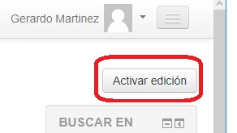

Para crear una liga en cualquier curso, debemos acceder con un rol como profesor con permiso de edición (o un rol similar que nos permita modificar el curso, como el administrador del sitio). Nos dirigimos al curso y pulsamos sobre el botón Activar edición en la esquina superior derecha.

Una vez que lo hayamos hecho, podremos editar cualquier parte del curso. Nos dirigimos al tema exacto en el que se quiere añadir la actividad y, justo debajo, aparece un enlace + Agregue una actividad o recurso.